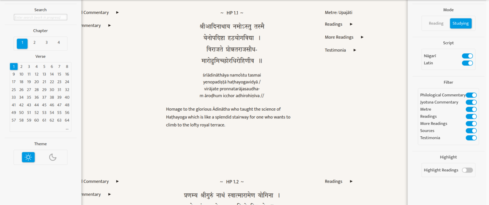

An AHRC and DFG-funded research project for creating a critical edition and translation of the Haṭhapradīpikā, the most important premodern text on physical yoga.
The project, which is based at the University of Oxford and the University of Marburg, aims to close a significant lacuna in historical yoga studies: a critical edition of the Haṭhapradīpikā (HP), the “Light on Hatha Yoga”. The HP, a Sanskrit manual on physical yoga composed by Svātmārāma in about 1400 CE, became the locus classicus for all subsequent scholarship on haṭhayoga and the most influential text on physical yoga both in premodern India and around the world today. The HP has been translated hundreds of times into many different languages, but these translations are unreliable since they are based on texts edited from, at best, a collation of nine manuscripts from a single region of India, when there are at least two hundred and fifty manuscripts available in collections in India and across the world.
The primary output of the project, a critical edition of the most important recension of the HP, will, at last, provide scholars and yoga practitioners with a definitive and authoritative version of the most important premodern text on physical yoga. The critical edition will be published together with an introduction and annotated translation. The introduction will detail how the text was edited and what its variant readings and recensions tell us about the premodern history of physical yoga practice. The notes to the translation will explain individual choices in the edition and provide a detailed analysis of how the practices taught in the text are to be performed.
Haṭhapradīpikā Symposium – Launch of the New Digital Edition
The Haṭhapradīpikā Symposium – Launch of the New Digital Edition that took place at the University of Oxford, Bodleian Weston Library on the 23rd February 2024.
This symposium showcases the collaborative outputs of the Light on Hatha Yoga Project, which was funded by the Arts and Humanities Research Council (AHRC) and the German Research Foundation Deutsche Forschungsgemeinschaft (DFG) from January 2021 to January 2024.
This three-year research project brought together arts and humanities researchers in the UK and Germany to conduct outstanding joint research. The project has produced a digital critical edition and English translation of the Haṭhapradīpikā, authored by Svātmārāma in the early 15th century, which is arguably one of the most widely cited and influential texts on physical yoga, and is instrumental for the flourishing of haṭhayoga on the eve of colonialism.
Building on the success of the five-year ERC-funded Hatha Yoga Project at SOAS University of London, scholars Prof. James Mallinson and Dr. Jason Birch of the University of Oxford have collaborated with Prof. Dr Jürgen Hanneder, Dr. Mitsuyo Demoto, and Dr. des. Nils Jacob Liersch of Philipps-Universität Marburg to produce this critical edition and English translation based on over 200 manuscripts, written in a variety of Indic scripts. The oldest manuscript sourced for the project is dated 1496 CE, which is remarkably close to the date of authorship by Svātmārāma himself.
Beyond the principal investigators and senior researchers, this project has been supported by research assistants at the École française d’Extrême-Orient (EFEO) in Pondicherry, India.
Speakers
Prof. James Mallinson, University of Oxford (00:00)
Welcome
The Composition of Svātmārāma’s Haṭhapradīpikā.
Dr. des. Nils Jacob Liersch, Philipps-Universität Marburg (34:19)
Computer Stemmatics applied to the Haṭhapradīpikā.
Dr. Mitsuyo Demoto, Philipps-Universität Marburg (01:04:11)
Development of the various recensions of the Haṭhapradīpikā.
Dr. Jason Birch, University of Oxford (01:39:18)
Insights from the New Critical Edition of the Haṭhapradīpikā.
Prof. Jürgen Hanneder, Philipps-Universität Marburg (02:19:19)
Brahmānanda’s Commentary on the Haṭhapradīpikā.
Launch of the New Digital Edition. (02:54:17)
Haṭhapradīpikā: The New Critical Edition
Hathapradipika.online (2024, Language: Sanskrit, English).
